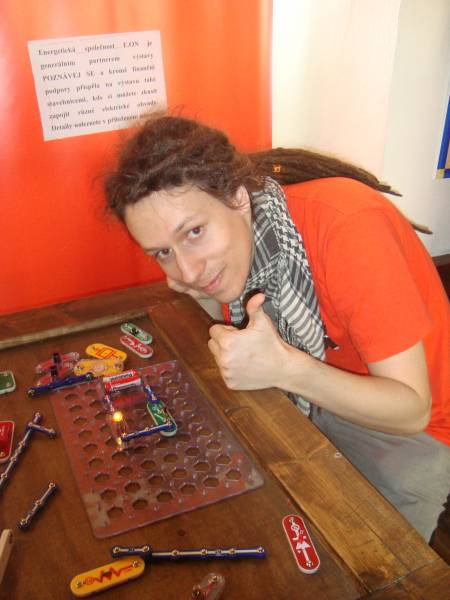
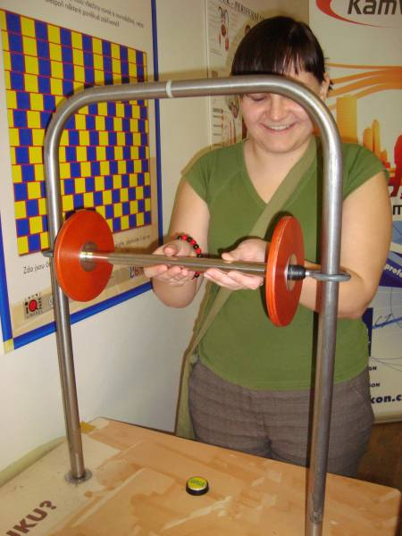
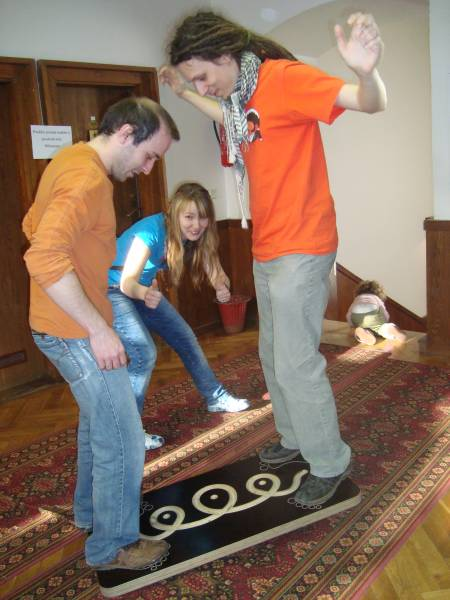

Návštěvu interaktivní výstavy Poznávej se jsme s Péťou plánovali dlouho dopředu, jak už to tak ale bývá, pořád jsme měli “dost času” a odkládali jsme to a odkládali, až tu byl najednou poslední březnový týden a my jsme zděšeně zjistili, že výstava v pátek končí. Proto jsme honem zmobilizovali zájemce a domluvili se na středeční odpoledne. Proč jsme právě o tuto výstavu tak stáli? Pořádalo ji science centrum iQpark Liberec a navazovala na Hry a klamy, které jsme navštívili zhruba rok zpátky. Výstava je báječná hlavně v tom, že obsahuje exponáty, které jsou sestrojeny tak, aby se návštěvníci mohli hravou a zábavnou formou dozvědět spoustu zajímavých informací o fungování lidského těla, o lidských smyslech nebo i to, jak někdy vlastní smysly klamou. Stejně jako Hry a klamy i Poznávej se bylo k vidění v prostorách Staré radnice v Brně. Jedinečnost výstavy spočívá v tom, že na rozdíl od běžných výstav či muzeí, kde je přísně zakázáno dotýkat se exponátů, zde je zapotřebí si vystavené objekty ošahat a přijít jim na kloub :-)…Nejlepší obrázek si o výstavě asi uděláte prostřednictvím fotografií…
Exkurze do hodin středoškolské fyziky…Péťa si pohrál a sestrojil obvod. Bude žárovička svítit nebo nebude?

Svítí :)!
Stěna z pružných lamel byla jednou z nejoblíbenějších atrakcí už na Hrách a klamech. I letos byla okupována převážně malými dětmi, které si do stěny s požitkem obtiskávaly ruce či jiné části těla. Poté, co se nám děcka podařilo odehnat, obtiskl se nám i Péťa. Povšimněte si krásného detailu dredů :D!

Tady jsme se s Pavčou zprvu neúspěšně pokoušely složit kachničku - naštěstí nám pomohla nápověda, ale pššt ;)…

Že jsem talent na skok z místa věděl už pan profesor Slezák :D! Abych se jen nechlubila, musela jsem své schopnosti doložit ukázkou - tady mě Péťa zachytil přímo v letu :D!

U tohoto exponátu bylo potřeba doložit prozměnu sílu rukou a zvednout činku tak, aby se při tom nedotkla kovových tyčí.

Pavča posiluje :)
Stejný úkol měla i Moe na zařízení, které se podobalo detektoru lži. Na “průchod” celou trasou jste měli 20 sekund a počítadlo vám nemilosrdně pípalo a počítalo každý dotyk…

Panny si prozměnu zahrál zvukové pexeso - na této atrakci jsem to projela na celé čáře, asi jsem hluchá jak poleno :D…

Na výstavě byla také rozmístěna všelijaká deformující zrcadla - tohle ovšem bylo mé oblíbené a vyčarovalo mi nohy dlouhé až na zem :D!

Další exponát, u kterého jsem byla ve svém živlu - měřil totiž postřeh ;-)! Na panelu se postupně rozsvěcovala světýlka a vy jste měli za úkol jich za minutu “odlovit” co nejvíc, skóre se zobrazovalo na displeji…

Tady se kluci pokoušeli udržet balanc a přitom si mezi sebou po dráze posílat dřevěnou kuličku.

Kluci balancují - Terez fandí :)
Nejvíc jsme se ale myslím nasmáli u tohoto modelu lidského těla. Byť bývalý biológ, horkotěžko jsem vzpomínala, kam který orgán a která trubička pasuje :D. Naštěstí jsme s sebou měli Terezz jakožto zástupce lékařské fakulty, která nám zasvěceně poradila, a tak se nám nakonec podařilo človíčka složit…:-)

No a nazávěr jsme zorganizovali akční foto “vyfoť se se svým oblíbeným orgánem” :DDD…ikdyž žaludek lákal, u mě zvítězilo srdce o:-)!

Fotek bohužel není moc, oproti loňsku jsme míň fotili a více si hráli, ale snad nám to odpustíte :-). Výstava stála každopádně zato a doufám, že příští rok si na nás iQpark Liberec zase něco přichystá ;)!
Komentáře (1)
Komentáře jsou uzavřené.